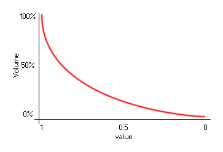

audio_music_gain(volume, time);
| Argument | Description |
|---|---|
| volume | Value for the music volume. |
| time | The length for the change in gain in milliseconds. |
Returns: N/A
WARNING! This function has been obsoleted and you
should use audio_sound_gain
instead.
With this function you can fade music in or out over a given length
of time. The time is measured in milliseconds, and the function
requires that you input a final gain for the sound to have reached
by the end of that time. This gain will generally be between 0
(silent) and 1 (full volume) and the scale is logarithmic in
nature, so a gain of 0.5 is not half volume, as illustrated
by the image below:

This function will affect all music that can be played in the game
and the final gain will set the volume at which all later music
files will be played.
if val
{
audio_music_gain(0, 0);
audio_play_music(snd_music, true);
audio_music_gain(1, 5000);
}
The above code checks a variable and if it returns true, the code will set the gain for the music indexed as "snd_Music" to 0, then start it playing, and then set the gain to fade up to full volume (1) over 5 seconds (5000 milliseconds).